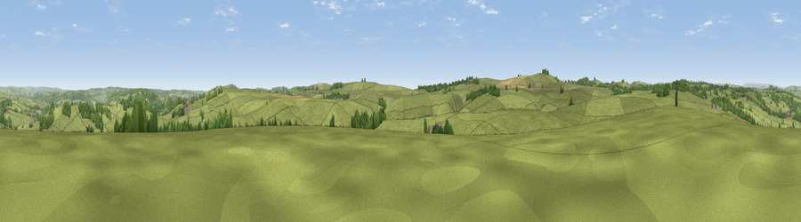

Viewpoint near Elton
#21808 in England · top 31% of its area beats it · near EltonWhere it is
The exact computed spot (SK 19925 60725). Click the marker for map links.
The view, rendered

A 360° render of this exact spot computed from the terrain model, tree cover and land cover — summer colours, afternoon light, calibrated against photographs of famous viewpoints. Real trees, hedges and buildings will differ in detail.
The panorama
Grey silhouette: terrain skyline in each direction (720 bearings, Earth curvature and refraction included). Dashed green: skyline with trees (+15 m) and buildings (+8 m) as obstacles. Blue strip: how far the ground is visible on each bearing.
Where the view opens
Wedge length = distance to the farthest visible ground on that bearing (vegetation-aware). Rings at 10, 25 and 50 km.
What fills the view
86% grassland · 10% woodland · 3% cropland ·
Angular shares of the visible panorama (visual magnitude), not map area. Landscape diversity 0.21 (0–1 Shannon).
Key numbers
More beautiful places nearby
The staircase of upgrades: each row has a higher view potential than everything closer. Driving times are estimates from straight-line distance, calibrated against real road routing — check an actual route before setting out.
| Place | Direction | Drive | Score |
|---|---|---|---|
| Blake Low | ESE · 2 km | ~6 min | 53.5 |
| Viewpoint near Biggin | WSW · 3 km | ~7 min | 61.5 |
| Viewpoint near Alsop en le Dale | SW · 5 km | ~11 min | 63.6 |
| Viewpoint near Biggin | WSW · 7 km | ~14 min | 65.6 |
| Harboro Rocks | SE · 7 km | ~14 min | 66.7 |
| Tissington Hill | SSW · 9 km | ~18 min | 75.5 |
| Viewpoint near Mow Cop | W · 34 km | ~52 min | 78.9 |
| Viewpoint near Mow Cop | W · 34 km | ~52 min | 80.2 |
53.14330, -1.70358 · source: screening · position refined by local search. Computed location — check access rights before visiting.